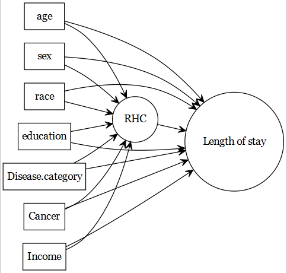

Chapter 1 RHC data description
Connors et al. (1996) published an article in JAMA. The article is about managing or guiding therapy for the critically ill patients in the intensive care unit.
The original article was concerned about the association of right heart catheterization (RHC) use during the first 24 hours of care in the intensive care unit and the health-outcomes mentioned above, but we will use this data as a case study for our prediction modelling.
1.1 Data download
Data is freely available from Vanderbilt Biostatistics, variable liste is available here, and the article is freely available from researchgate.
# load the dataset
ObsData <- read.csv("https://hbiostat.org/data/repo/rhc.csv",
header = TRUE)
saveRDS(ObsData, file = "data/rhc.RDS")1.2 Creating Analytic data
In this section, we show the process of preparing analytic data, so that the variables generally match with the way they were coded in the original article.
Below we show the process of creating the analytic data.
1.2.1 Add column for outcome: length of stay
# Length.of.Stay = date of discharge - study admission date
# Length.of.Stay = date of death - study admission date
# if date of discharge not available
ObsData$Length.of.Stay <- ObsData$dschdte -
ObsData$sadmdte
ObsData$Length.of.Stay[is.na(ObsData$Length.of.Stay)] <-
ObsData$dthdte[is.na(ObsData$Length.of.Stay)] -
ObsData$sadmdte[is.na(ObsData$Length.of.Stay)]1.2.2 Recoding column for outcome: death
ObsData$death <- ifelse(ObsData$death == "Yes", 1, 0)1.2.3 Remove unnecessary outcomes
ObsData <- dplyr::select(ObsData,
!c(dthdte, lstctdte, dschdte,
t3d30, dth30, surv2md1))1.2.4 Remove unnecessary and problematic variables
ObsData <- dplyr::select(ObsData,
!c(sadmdte, ptid, X, adld3p,
urin1, cat2))1.2.5 Basic data cleanup
# convert all categorical variables to factors
factors <- c("cat1", "ca", "death", "cardiohx", "chfhx",
"dementhx", "psychhx", "chrpulhx", "renalhx",
"liverhx", "gibledhx", "malighx", "immunhx",
"transhx", "amihx", "sex", "dnr1", "ninsclas",
"resp", "card", "neuro", "gastr", "renal", "meta",
"hema", "seps", "trauma", "ortho", "race",
"income")
ObsData[factors] <- lapply(ObsData[factors], as.factor)
# convert RHC.use (RHC vs. No RHC) to a binary variable
ObsData$RHC.use <- ifelse(ObsData$swang1 == "RHC", 1, 0)
ObsData <- dplyr::select(ObsData, !swang1)
# Categorize the variables to match with the original paper
ObsData$age <- cut(ObsData$age,
breaks=c(-Inf, 50, 60, 70, 80, Inf),
right=FALSE)
ObsData$race <- factor(ObsData$race,
levels=c("white","black","other"))
ObsData$sex <- as.factor(ObsData$sex)
ObsData$sex <- relevel(ObsData$sex, ref = "Male")
ObsData$cat1 <- as.factor(ObsData$cat1)
levels(ObsData$cat1) <- c("ARF","CHF","Other","Other","Other",
"Other","Other","MOSF","MOSF")
ObsData$ca <- as.factor(ObsData$ca)
levels(ObsData$ca) <- c("Metastatic","None","Localized (Yes)")
ObsData$ca <- factor(ObsData$ca, levels=c("None",
"Localized (Yes)",
"Metastatic"))1.2.6 Rename variables
names(ObsData) <- c("Disease.category", "Cancer", "Death", "Cardiovascular",
"Congestive.HF", "Dementia", "Psychiatric", "Pulmonary",
"Renal", "Hepatic", "GI.Bleed", "Tumor",
"Immunosupperssion", "Transfer.hx", "MI", "age", "sex",
"edu", "DASIndex", "APACHE.score", "Glasgow.Coma.Score",
"blood.pressure", "WBC", "Heart.rate", "Respiratory.rate",
"Temperature", "PaO2vs.FIO2", "Albumin", "Hematocrit",
"Bilirubin", "Creatinine", "Sodium", "Potassium", "PaCo2",
"PH", "Weight", "DNR.status", "Medical.insurance",
"Respiratory.Diag", "Cardiovascular.Diag",
"Neurological.Diag", "Gastrointestinal.Diag", "Renal.Diag",
"Metabolic.Diag", "Hematologic.Diag", "Sepsis.Diag",
"Trauma.Diag", "Orthopedic.Diag", "race", "income",
"Length.of.Stay", "RHC.use")
saveRDS(ObsData, file = "data/rhcAnalytic.RDS")1.3 Notations
| Notations | Example in RHC study |
|---|---|
| \(Y_1\): Observed outcome | length of stay |
| \(Y_2\): Observed outcome | death within 3 months |
| \(L\): Covariates | See below |
1.4 Basic data exploration
1.4.1 Dimension and summary
dim(ObsData)## [1] 5735 52#str(ObsData)1.4.2 More comprehensive summary
require(skimr)## Loading required package: skimr## Warning: package 'skimr' was built under R version 4.1.1skim(ObsData)| Name | ObsData |
| Number of rows | 5735 |
| Number of columns | 52 |
| _______________________ | |
| Column type frequency: | |
| factor | 31 |
| numeric | 21 |
| ________________________ | |
| Group variables | None |
Variable type: factor
| skim_variable | n_missing | complete_rate | ordered | n_unique | top_counts |
|---|---|---|---|---|---|
| Disease.category | 0 | 1 | FALSE | 4 | ARF: 2490, MOS: 1626, Oth: 1163, CHF: 456 |
| Cancer | 0 | 1 | FALSE | 3 | Non: 4379, Loc: 972, Met: 384 |
| Death | 0 | 1 | FALSE | 2 | 1: 3722, 0: 2013 |
| Cardiovascular | 0 | 1 | FALSE | 2 | 0: 4722, 1: 1013 |
| Congestive.HF | 0 | 1 | FALSE | 2 | 0: 4714, 1: 1021 |
| Dementia | 0 | 1 | FALSE | 2 | 0: 5171, 1: 564 |
| Psychiatric | 0 | 1 | FALSE | 2 | 0: 5349, 1: 386 |
| Pulmonary | 0 | 1 | FALSE | 2 | 0: 4646, 1: 1089 |
| Renal | 0 | 1 | FALSE | 2 | 0: 5480, 1: 255 |
| Hepatic | 0 | 1 | FALSE | 2 | 0: 5334, 1: 401 |
| GI.Bleed | 0 | 1 | FALSE | 2 | 0: 5550, 1: 185 |
| Tumor | 0 | 1 | FALSE | 2 | 0: 4419, 1: 1316 |
| Immunosupperssion | 0 | 1 | FALSE | 2 | 0: 4192, 1: 1543 |
| Transfer.hx | 0 | 1 | FALSE | 2 | 0: 5073, 1: 662 |
| MI | 0 | 1 | FALSE | 2 | 0: 5535, 1: 200 |
| age | 0 | 1 | FALSE | 5 | [-I: 1424, [60: 1389, [70: 1338, [50: 917 |
| sex | 0 | 1 | FALSE | 2 | Mal: 3192, Fem: 2543 |
| DNR.status | 0 | 1 | FALSE | 2 | No: 5081, Yes: 654 |
| Medical.insurance | 0 | 1 | FALSE | 6 | Pri: 1698, Med: 1458, Pri: 1236, Med: 647 |
| Respiratory.Diag | 0 | 1 | FALSE | 2 | No: 3622, Yes: 2113 |
| Cardiovascular.Diag | 0 | 1 | FALSE | 2 | No: 3804, Yes: 1931 |
| Neurological.Diag | 0 | 1 | FALSE | 2 | No: 5042, Yes: 693 |
| Gastrointestinal.Diag | 0 | 1 | FALSE | 2 | No: 4793, Yes: 942 |
| Renal.Diag | 0 | 1 | FALSE | 2 | No: 5440, Yes: 295 |
| Metabolic.Diag | 0 | 1 | FALSE | 2 | No: 5470, Yes: 265 |
| Hematologic.Diag | 0 | 1 | FALSE | 2 | No: 5381, Yes: 354 |
| Sepsis.Diag | 0 | 1 | FALSE | 2 | No: 4704, Yes: 1031 |
| Trauma.Diag | 0 | 1 | FALSE | 2 | No: 5683, Yes: 52 |
| Orthopedic.Diag | 0 | 1 | FALSE | 2 | No: 5728, Yes: 7 |
| race | 0 | 1 | FALSE | 3 | whi: 4460, bla: 920, oth: 355 |
| income | 0 | 1 | FALSE | 4 | Und: 3226, $11: 1165, $25: 893, > $: 451 |
Variable type: numeric
| skim_variable | n_missing | complete_rate | mean | sd | p0 | p25 | p50 | p75 | p100 | hist |
|---|---|---|---|---|---|---|---|---|---|---|
| edu | 0 | 1 | 11.68 | 3.15 | 0.00 | 10.00 | 12.00 | 13.00 | 30.00 | âââââ |
| DASIndex | 0 | 1 | 20.50 | 5.32 | 11.00 | 16.06 | 19.75 | 23.43 | 33.00 | âââââ |
| APACHE.score | 0 | 1 | 54.67 | 19.96 | 3.00 | 41.00 | 54.00 | 67.00 | 147.00 | âââ ââ |
| Glasgow.Coma.Score | 0 | 1 | 21.00 | 30.27 | 0.00 | 0.00 | 0.00 | 41.00 | 100.00 | âââââ |
| blood.pressure | 0 | 1 | 78.52 | 38.05 | 0.00 | 50.00 | 63.00 | 115.00 | 259.00 | âââââ |
| WBC | 0 | 1 | 15.65 | 11.87 | 0.00 | 8.40 | 14.10 | 20.05 | 192.00 | âââââ |
| Heart.rate | 0 | 1 | 115.18 | 41.24 | 0.00 | 97.00 | 124.00 | 141.00 | 250.00 | âââââ |
| Respiratory.rate | 0 | 1 | 28.09 | 14.08 | 0.00 | 14.00 | 30.00 | 38.00 | 100.00 | â ââââ |
| Temperature | 0 | 1 | 37.62 | 1.77 | 27.00 | 36.09 | 38.09 | 39.00 | 43.00 | âââ ââ |
| PaO2vs.FIO2 | 0 | 1 | 222.27 | 114.95 | 11.60 | 133.31 | 202.50 | 316.62 | 937.50 | âââââ |
| Albumin | 0 | 1 | 3.09 | 0.78 | 0.30 | 2.60 | 3.50 | 3.50 | 29.00 | âââââ |
| Hematocrit | 0 | 1 | 31.87 | 8.36 | 2.00 | 26.10 | 30.00 | 36.30 | 66.19 | âââââ |
| Bilirubin | 0 | 1 | 2.27 | 4.80 | 0.10 | 0.80 | 1.01 | 1.40 | 58.20 | âââââ |
| Creatinine | 0 | 1 | 2.13 | 2.05 | 0.10 | 1.00 | 1.50 | 2.40 | 25.10 | âââââ |
| Sodium | 0 | 1 | 136.77 | 7.66 | 101.00 | 132.00 | 136.00 | 142.00 | 178.00 | âââââ |
| Potassium | 0 | 1 | 4.07 | 1.03 | 1.10 | 3.40 | 3.80 | 4.60 | 11.90 | âââââ |
| PaCo2 | 0 | 1 | 38.75 | 13.18 | 1.00 | 31.00 | 37.00 | 42.00 | 156.00 | âââââ |
| PH | 0 | 1 | 7.39 | 0.11 | 6.58 | 7.34 | 7.40 | 7.46 | 7.77 | âââââ |
| Weight | 0 | 1 | 67.83 | 29.06 | 0.00 | 56.30 | 70.00 | 83.70 | 244.00 | âââââ |
| Length.of.Stay | 0 | 1 | 21.56 | 25.87 | 2.00 | 7.00 | 14.00 | 25.00 | 394.00 | âââââ |
| RHC.use | 0 | 1 | 0.38 | 0.49 | 0.00 | 0.00 | 0.00 | 1.00 | 1.00 | âââââ |
#require(rms)
#describe(ObsData) 1.5 Predictive vs. causal models
The focus of current document is predictive models (e.g., predicting a health outcome).

The original article by Connors et al. (1996) focused on the association of
- right heart catheterization (RHC) use during the first 24 hours of care in the intensive care unit (exposure of primary interest) and
- the health-outcomes (such as length of stay).

- If the readers are interested about the causal models used in that article, they can refer to this tutorial.
- This data has been used in other articles in the literature within the advanced causal modelling context; for example Keele and Small (2021) and Keele and Small (2018). Readers can further consult this tutorial to understand those methods.
They considered a number of health-outcomes such as